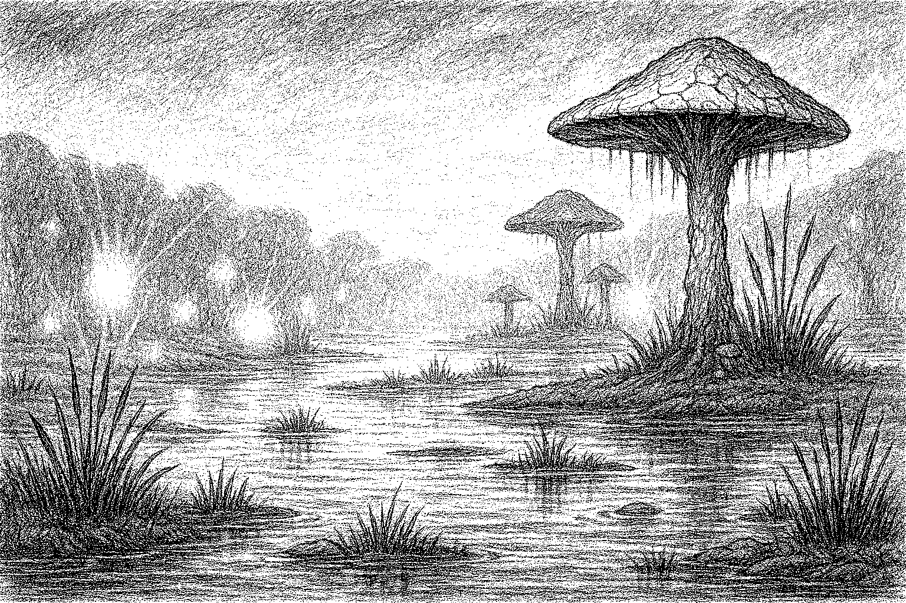

The Shatterglass Fens stretch across a low, mist-choked basin where sunlight filters through in
fractured beams.
The
water here lies unnervingly still, its surface broken only by narrow paths of cracked mud and the sharp, jagged
patterns
of mineral sheen that earned the Fens their name. At a glance, the wetland seems like a shattered mirror strewn
across
the earth. Step too fast, and the ground itself may twist beneath your feet — the soil behaves more like a
living thing,
as if reluctantly tolerating the presence of trespassers.
The air hangs heavy with moisture and a faint chemical tang, while the soundscape is an eerie blend of croaking
echoes
and distant, bubbling shifts beneath the muck. Luminous reeds line the water’s edge, glowing with a soft
bioluminescence. They pulse slowly in rhythm, as if breathing — some say they react to emotion, others believe
they’re
rooted in something older and more intelligent than plants have any right to be.
While the Fens are known for their quiet beauty, they are treacherous and unwelcoming to the unprepared.
Inhabitants
Will-o-wisp
Teste
Pale blue lights that dance just out of reach, often mistaken for fireflies or soul-lanterns. They lead
wanderers into
deep water or unstable bogs. Some claim they are the spirits of those who drowned in the Fens, others argue they
are
intelligent predators feeding on confusion and fear. They rarely attack directly — their weapon is misdirection.
Bog Serpents

Long, slick, and almost entirely silent beneath the water, these creatures resemble enormous eels with
segmented plating
and mossy frills. Their eyes are lidless and fixed, peering just above the surface before striking like a
whip. Though
solitary, they are relentless once provoked. The older ones are covered in barnacle-like growths and
trailing strands of
luminous moss, blending in with the glowing wetlands.
Swamp Myconid
Fungal beings that stand in silence like ancient totems, often mistaken for rotted tree stumps. They thrive
in clusters
and emit spores that cause hallucinations or disorientation. Myconids communicate through pheromones and
spore clouds,
and are rumored to be guardians of something buried deep beneath the Fens — perhaps a greater fungal mind,
or something
left behind by a long-forgotten civilization. Though slow, they are not defenseless, and some have been seen
wielding
weapons made from bone and petrified wood.